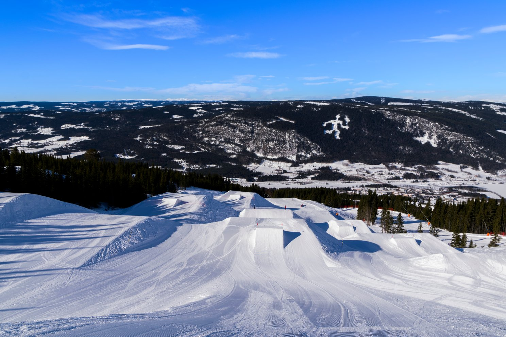
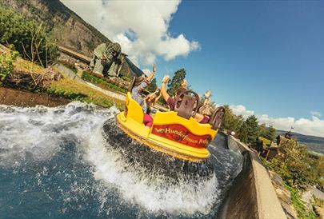
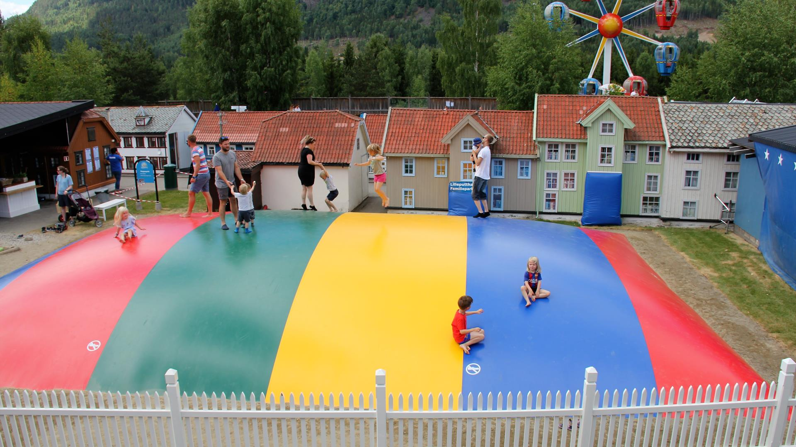

Visit Øyer
Enjoy culture and sports in Øyer wich is a suburb the Olympic city of Lillehammer.
Top three activities to do in Øyer

Hafjell is the place to be in the winter season. It has hosted the Olympics in 1994 and X games in 2017

Is an amusment park with theme's from norwegian fairytales

Lilleputthammer is a miniature of old Lillehammer city with lots of other activities for children.
Your guide
"I have lived in Lillehammer for 10 years, But I am actually born in Bergen wich is the nicest town in Norway. My Father is from Frøya an island in the middle of Norway known for salmon. My mother is from Meløy in the northern part of Norway known for the worlds most beautifull outdoor toilet with the best view."